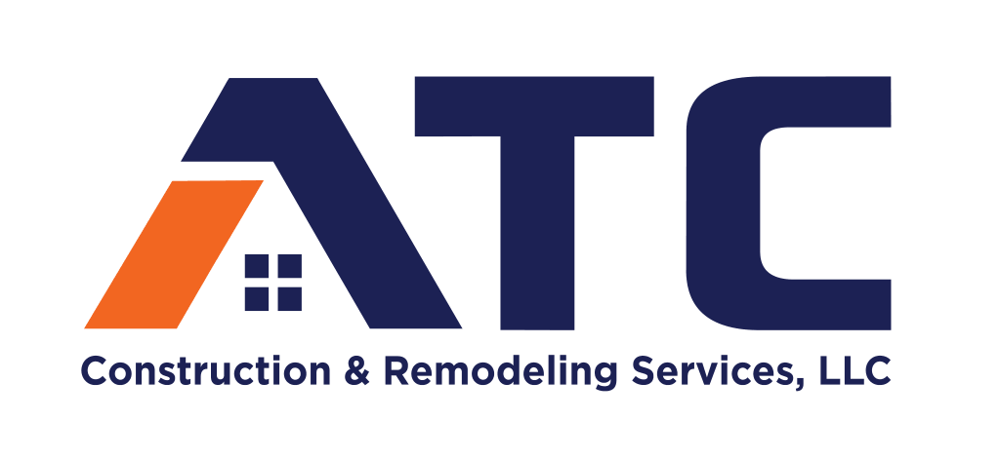

ATC Construction provides expert concrete services in Nashville, TN and surrounding areas. We specialize in driveways, patios, walkways, pool decks, and concrete repairs. Our team focuses on durability, precision, and clean finishes to ensure every project enhances your property’s value and curb appeal.
Professional driveway installation in Nashville, TN designed for strength, longevity, and curb appeal.
Custom patios built for outdoor living spaces across Nashville and surrounding areas.
Safe, durable, and professionally finished walkways for homes and businesses.
High-quality concrete pool decks that combine durability with clean, modern design.
Reliable concrete repair services in Nashville to restore and extend surface life.
Unique concrete solutions tailored to your vision, from decorative work to specialty builds.
Contact ATC Construction today for professional concrete services you can trust.
CONTACT US